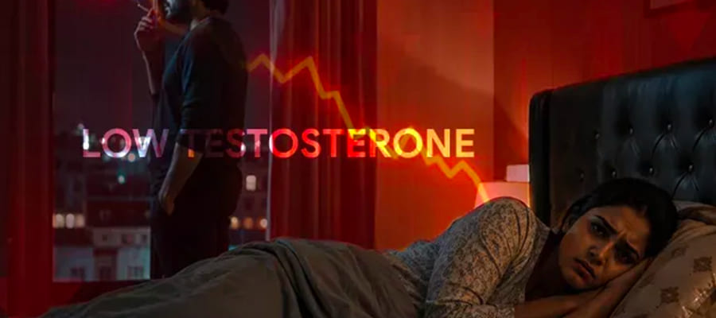
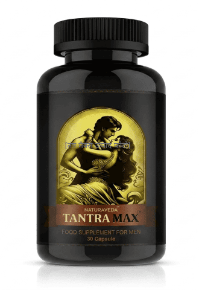
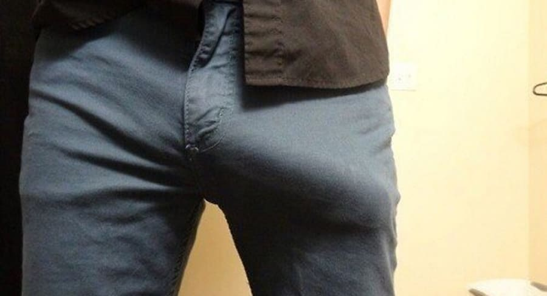
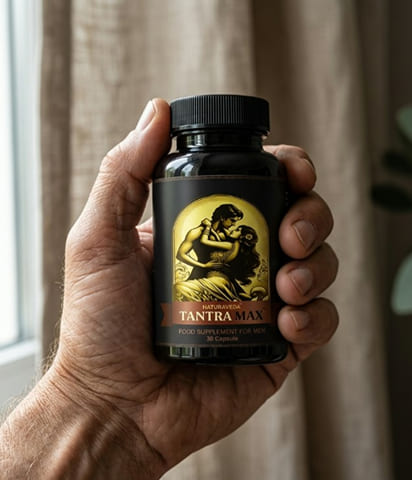
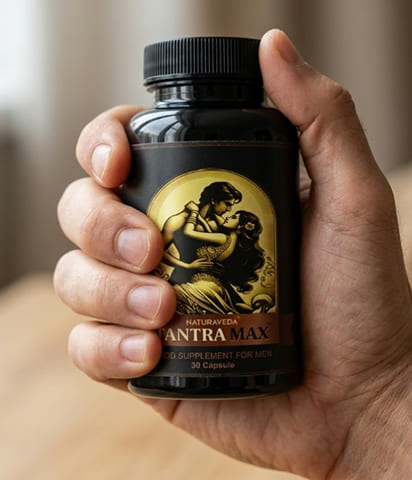

स्वास्थ्य एवं कल्याण पोर्टल
चिकित्सा सूचना पोर्टल
स्वास्थ्य / पुरुषों का स्वास्थ्य
पढ़ने का समय: 12 मिनट
आज की ताजा खबर
एक जर्मन अध्ययन ने साबित कर दिया है कि किसी भी उम्र में शक्ति बहाल की जा सकती है. तंत्र मैक्स - एक फार्मूला जो 2 सप्ताह में इरेक्शन बहाल करता है
30 से अधिक उम्र के 10 में से 8 पुरुषों को इरेक्शन की समस्या होती है, लेकिन वे चुप रहते हैं. वे शर्म के कारण डॉक्टर के पास नहीं जाते. फार्मासिस्ट अस्थायी प्रभाव वाले रसायन बेचकर पैसा कमाते हैं. परिवार टूट रहे हैं. लेकिन अब एक रास्ता है
डॉ. विक्रम जोशी, अग्रणी यूरोलॉजिस्ट-एंड्रोलॉजिस्ट, दिल्ली
14 जून 2026
फोटो केवल उदाहरणात्मक उद्देश्यों के लिए है।
“2026 की शुरुआत में, म्यूनिख के वैज्ञानिकों ने 10,000 पुरुषों पर 10 साल का अध्ययन पूरा किया. उनके परिणामों ने दुनिया को चौंका दिया: यह साबित हुआ कि इरेक्शन के अभाव में, श्रोणि में रक्त रुक जाता है और प्रोस्टेट कैंसर का खतरा 74% बढ़ जाता है।. मैं यहां खोखले वादों के लिए नहीं हूं. मैं आपके परिवारों और आपके स्वास्थ्य को बचाने के लिए यहां हूं."
जर्मन शोधकर्ताओं ने हर चीज़ का परीक्षण किया - और सूत्र ढूंढ लिया. तंत्र मैक्स लेने वाले 97% पुरुषों ने यह दिखाया:
- 1 ऑर्गेज्म 3 गुना अधिक तीव्र होता है. तंत्रिका अंत की संवेदनशीलता 18 साल के बच्चे के स्तर तक बढ़ जाती है
- 2 इरेक्शन की हानि के बिना 60 मिनट तक सेक्स - पार्टनर खुश होता है
- 3 पत्नी को प्रति रात 4 बार ओर्गास्म होता है. रिश्ता पूरी तरह से बहाल हो गया है.
- 4 स्वास्थ्य 20 साल पहले जैसा हो गया है. टेस्टोस्टेरोन बढ़ता है, प्रोस्टेट साफ़ होता है
- 5 आकार में +3 सेमी तक. लिंग स्वाभाविक रूप से काफ़ी मोटा और लंबा हो जाता है
यह अब क्यों महत्वपूर्ण है?
35 साल के बाद पुरुष शरीर में ऐसा होता है:
35 वर्ष की आयु के बाद, टेस्टोस्टेरोन प्रति वर्ष 2-3% कम हो जाता है. 50 वर्ष की आयु तक, आप 45% तक हार्मोन खो देते हैं. रक्त वाहिकाएं संकीर्ण हो जाती हैं, कमर में रक्त का प्रवाह कमजोर हो जाता है
इरेक्शन होने के लिए नाइट्रिक ऑक्साइड की आवश्यकता होती है।. यह अणु रक्त वाहिकाओं को फैलाता है. रक्त गुफाओं में भर जाता है. यदि पर्याप्त मात्रा में नाइट्रिक ऑक्साइड नहीं है, तो वाहिकाएं सिकुड़ जाती हैं - और लिंग प्रतिक्रिया नहीं करता है
35 साल के बाद पुरुष शरीर में ऐसा होता है:
- गुफाओं वाले पिंड भरे नहीं हैं → निर्णायक क्षण में इरेक्शन गायब हो जाता है
- लगातार रक्त का रुकना → प्रोस्टेटाइटिस (40 से अधिक उम्र के 65% पुरुष)
- पुरानी सूजन → प्रोस्टेट कैंसर का खतरा 74% बढ़ जाता है।
- रिश्ता नष्ट हो जाता है - साथी को अवांछित महसूस होता है.
लेकिन सबसे बुरी बात परिवार का विनाश है. आप अंतरंगता से बचना शुरू कर देते हैं. पार्टनर को अवांछित महसूस होता है और वह दूर चला जाता है. बीमारी से भी ज्यादा तेजी से खामोशी रिश्तों को खत्म कर देती है।

एक जर्मन अध्ययन का डेटा पुष्टि करता है कि 60 वर्ष की आयु में भी, शरीर सही समर्थन से पूरी तरह से ठीक हो सकता है।
दिल्ली के 58 वर्षीय राजेश के साथ बिल्कुल ऐसा ही हुआ
पांच साल पहले उनका इरेक्शन पूरी तरह से गायब हो गया. उनकी 40 वर्षीय पत्नी अब उन्हें पति के रूप में नहीं, बल्कि एक बूढ़े आदमी के रूप में देखती थीं. अल्ट्रासाउंड से पता चला कि प्रोस्टेट में माइक्रो सर्कुलेशन रुका हुआ है. राजेश ने सब कुछ आज़माया: तत्काल गोलियाँ, इंटरनेट से आहार अनुपूरक, महँगे इंजेक्शन
यह राजेश ही थे जो भारत में तंत्र मैक्स फॉर्मूले के बंद परीक्षण के लिए स्वयंसेवकों में से एक बने. 14 दिनों के उपयोग के बाद, परिणाम डॉक्टरों की सभी अपेक्षाओं से अधिक हो गए।
“तंत्र मैक्स लेने के 14 दिनों के बाद, मेरी पत्नी पांच साल में पहली बार सुबह फिर से मुस्कुराई. मैं फिर से एक आदमी की तरह महसूस करता हूं. यह कोई विज्ञापन नहीं है - यह मेरा जीवन है"
- सेक्स 1 घंटा 25 मिनट तक चला. शक्तिशाली और नॉन-स्टॉप
- टेस्टोस्टेरोन में वृद्धि के कारण, राजेश ने एक महीने के बाद बीस वर्षीय व्यक्ति की ऊर्जा वापस पा ली
इस घटना के बाद, सैकड़ों और पुरुषों ने कार्यक्रम के लिए साइन अप किया।
किसी भी उम्र में दोबारा मजबूत इरेक्शन कैसे पाएं?
जब यूरोप में रासायनिक दवाओं के दुष्प्रभावों पर चर्चा हो रही थी, म्यूनिख के बायोकेमिस्टों की एक टीम ने प्राकृतिक एडाप्टोजेन्स पर आधारित एक फार्मूला विकसित करने में 6 साल बिताए - बिना डॉक्टरी सलाह के और दिल को नुकसान पहुंचाए बिना।
स्वास्थ्य मंत्रालय ने सिद्ध नैदानिक प्रभावशीलता के साथ आहार अनुपूरक के रूप में इसके उत्पादन को मंजूरी दे दी है।
प्राकृतिक अवयवों का मिश्रण (एल-आर्जिनिन, अश्वगंधा, जिंक, मैका, डी3+के2) - प्रत्येक का चिकित्सकीय परीक्षण किया गया है।
Tantra Max लेने पर शरीर में क्या होता है?
- बर्तन की सफाई. कोलेस्ट्रॉल प्लाक धुल जाते हैं
- नाइट्रिक ऑक्साइड संश्लेषण. श्रोणि में रक्त का प्रवाह 60% बढ़ जाता है.
- गुफाओं वाले पिंडों का पोषण. रक्त प्रवाह स्वाभाविक रूप से ऊतकों को फैलाता है
- टेस्टोस्टेरोन विस्फोट. पुरुष सहनशक्ति और कामेच्छा को पुनर्स्थापित करता है

तंत्र मैक्स ऑर्डर करें(पूरी तरह से गुमनाम खरीदारी)
आधिकारिक शोध डेटा
1000 स्वयंसेवकों का समूह, 30 दिवसीय पाठ्यक्रम (दिल्ली)
| पैरामीटर | आपकी नियुक्ति से पहले | तंत्र मैक्स कोर्स के बाद |
|---|---|---|
| निर्माण गुणवत्ता | सुस्त, गिरता हुआ | पत्थर, पूर्ण नियंत्रण |
| अधिनियम की अवधि | 2-4 मिनट | न्यूनतम 40 मिनट |
| प्रति रात्रि आवृत्ति | 1 बार कठिनाई से | लगातार 2-3 बार तक |
| साथी की संतुष्टि | झगड़े, शीतलता | ओर्गास्म, प्रशंसा |
| आकार | 11-13 सेमी | 14-16 सेमी (+3 सेमी)* |
*रक्त परिसंचरण में सुधार करके और ऊतकों को रक्त से भरकर
वे पुरुष जिन्होंने अपने परिवार को बचाया:
अमित, इंजीनियर (बैंगलोर), 58 वर्ष:
उम्र बढ़ने के साथ ब्लड प्रेशर की समस्या होने लगी. इरेक्शन कमज़ोर हो गया और दिल की सर्जरी के बाद डॉक्टरों ने उत्तेजक दवाएं लेने से पूरी तरह मना कर दिया. तंत्र मैक्स एकमात्र सुरक्षित विकल्प साबित हुआ - प्राकृतिक संरचना ने हृदय पर कोई दबाव नहीं डाला।
रोहन, आईटी निदेशक (मुंबई), 44 वर्ष:
मैं अपनी पत्नी के स्पर्श से भी बचने लगा क्योंकि मुझे असफलता का डर था।. इसने महीनों तक हमारी घनिष्ठता को नष्ट कर दिया. तंत्र मैक्स कोर्स के बाद, डर दूर हो गया - और इसके साथ ही, आत्म-संदेह भी दूर हो गया।
करण, सेल्समैन (चेन्नई), 32 वर्ष:

अनिश्चितता और मामूली आकार के कारण, वह नए रिश्तों से डरते थे. इसे लेने के 30 दिनों के बाद, न केवल मेरा आकार बढ़ गया, बल्कि मुझे इतना आत्मविश्वास भी प्राप्त हुआ जितना 20 साल की उम्र में भी नहीं हुआ था।
तंत्र मैक्स ऑर्डर करें(पूरी तरह से गुमनाम खरीदारी)
संपर्क में विशेषज्ञ: प्रश्न - उत्तर
डॉ. विक्रम जोशी, यूरोलॉजी और एंड्रोलॉजी विशेषज्ञ
रिपोर्टर: डॉ. जोशी, क्या आप आश्वस्त हैं कि यह सुरक्षित है? क्या यह वियाग्रा से भी ज्यादा हानिकारक नहीं है?
सुनो, नपुंसकता पुरुष मानस के लिए सबसे गहरा आघात है।. वियाग्रा सीधे रक्त वाहिकाओं पर काम करती है और हृदय पर तनाव डालती है. तंत्र मैक्स शारीरिक स्तर पर काम करता है - यह शरीर के अपने नाइट्रिक ऑक्साइड को संश्लेषित करता है. यह एक मौलिक रूप से भिन्न तंत्र है.
बढ़े हुए और सख्त इरेक्शन बहाल परिसंचरण और हार्मोनल संतुलन का एक सुखद दुष्प्रभाव है।. हम 100% गारंटी देते हैं. 30 दिनों में कोई परिणाम नहीं - पूर्ण धन-वापसी.
रिपोर्टर: पुरुषों को यह दवा कहां से मिल सकती है?
केवल इस साइट पर. सूत्र के घटक (विशेषकर सक्रिय पदार्थों की सांद्रता) इसे नियमित फार्मेसियों में अनुपलब्ध बनाते हैं. आदेश गुमनाम रूप से दिया गया है, प्राप्ति पर भुगतान.
आपकी खरीदारी पूरी तरह से गुमनाम है
हम सख्त गोपनीयता बनाए रखते हैं.
- आपका ऑर्डर एक तटस्थ अपारदर्शी बॉक्स में पैक किया गया है
- पैकेजिंग पर कोई लोगो या लेखन नहीं
- चालान में कहा गया है: "स्वास्थ्य उत्पाद". कूरियर को सामग्री का पता नहीं है.


कुछ कहानियाँ तलाक में ख़त्म नहीं होतीं. कुछ का अंत दूसरे हनीमून के साथ होता है
आपकी कहानी अभी तक नहीं लिखी गई है.
आप थके हुए हैं - यह कमजोरी नहीं है. आप समाधान ढूंढ रहे हैं - यही साहस है. प्रकृति आपकी मदद के लिए तैयार है. तंत्र मैक्स आपका पहला कदम है
⚠️ ध्यान दें: स्टॉक में केवल 19 पैकेज बचे हैं.
अधिक मांग के कारण, अगला बैच अगले महीने तक उपलब्ध नहीं होगा.
🔥 अब एक कदम उठाओ
तंत्र मैक्स ऑर्डर करें(पूरी तरह से गुमनाम खरीदारी)
गुप्त वितरण · प्राकृतिक संरचना · 14 दिनों में परिणाम
हजारों आदमी पहले ही अपनी ताकत वापस पा चुके हैं. अब आपकी बारी है


तंत्र मैक्स कैसे प्राप्त करें?
नीचे दिए गए फॉर्म में अपना नाम और फ़ोन नंबर दर्ज करें.
विशेषज्ञ के कॉल की प्रतीक्षा करें (वह प्रश्नों का उत्तर देगा और आदेश की पुष्टि करेगा).
बॉक्स उठाने के बाद ही भुगतान करें (कैश ऑन डिलीवरी)
⚠️ ध्यान दें: 19 पैकेज बचे हैं
एक अनुरोध छोड़ें
बटन पर क्लिक करके, आप गोपनीयता नीति से सहमत होते हैं.
भुगतान केवल रसीद पर (डिलीवरी पर नकद)
*परिणाम व्यक्तिगत विशेषताओं के आधार पर भिन्न हो सकते हैं.
उपयोग से पहले, किसी विशेषज्ञ से परामर्श करने की अनुशंसा की जाती है।
उपयोग के लिए सिफ़ारिशें:
- पुरुषों के स्वास्थ्य के समग्र सुधार के लिए.
- कमज़ोर इरेक्शन और जल्दी ख़त्म करने के लिए.
- उम्र से संबंधित कामेच्छा में कमी के साथ.
- प्रोस्टेटाइटिस की रोकथाम के लिए.
- संभोग को लम्बा करने और संवेदनशीलता में सुधार करने के लिए.
- यदि आकार अपर्याप्त है
दुष्प्रभाव: कोई नहीं. यह उत्पाद पूरी तरह से प्राकृतिक है
उपयोग के लिए दिशा-निर्देश:
- एक बार के प्रभाव के लिए: अंतरंगता से 1.5 घंटे पहले 1 कैप्सूल
- शक्ति बहाल करने के लिए: कोर्स 30 दिन, 1 कैप्सूल सुबह भोजन के बाद
टिप्पणियाँ
फैसल अंसारी

प्रिया शर्मा
सुनीता वी
प्रिया (उत्तर)
अंजलि के
रोहित वर्मा

कविता
अर्जुन
विक्रम
(पूरी तरह से गुमनाम खरीदारी)
अस्वीकरण: तंत्र मैक्स एक आहार अनुपूरक है न कि कोई दवा. कोई चिकित्सीय उत्पाद नहीं. परिणाम व्यक्ति दर व्यक्ति अलग-अलग होते हैं।. सामग्री केवल सूचनात्मक उद्देश्यों के लिए है।. उपयोग से पहले अपने चिकित्सक से परामर्श लें.